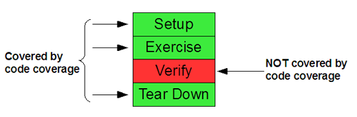

To benefit from the principle of Continous Integration you need a good testing suite which includes both regression and new-feature tests. Regressions tests focus on testing features which are already implemented and shouldn’t be changed or influenced by latest commited changes. When software evolves such regression tests play a major role for the set of “old” features is far bigger compared to the new ones. One of Continous Integration’s key features is to run test automatically and reporting the results to us, so we are notified when something has been broken and we can react on this quickly. This article discusses what dangers can occur when relying too much on the green bar of your test-suite results.
Common Continous Integration tools (e.g. Cruise-Control, Continumm) are running unit and integration tests and reporting the outcome (error, failure, success) with a push mechanism like E-Mail, Messenger client. As a developer usually you only prick up your ears when you see a red bar. When a green bar shows up or the reporting tool even filters success outcomes we could get into a very severe problem: We think everything is alright for all tests passed but in fact we stepped into a false negative trap and part of the system is broken. As such the test-suite quality isn’t as good as we thought and software quality decreases invisibly. Usually organisation tries to proove test-suite’s quality by using a coverage tool like Cobertura or Clover. They are quite a help for seeking new test cases, never the less it exposes a big problem.
Regarding the Four-Phase test pattern (explained in superb book xUnit Test Patterns by Gerard Meszaros), code coverage shows us that certain parts of production code are executed in Setup, Exercise and Tear-Down phase of test. Considering this code coverage clearly misses to adress the “quality” of the Verify part of the test. Thus when using code coverage as test-suite quality metric only, we still can have a bad test quality: Though our tests are walking through wide areas of production code in fact they don’t tell us what we really expect from it, which is usually done with assertions.

Bad Test Smells
To get a better feeling what can go wrong within the Verify part of a test case have a look at following three (common) test smell examples:
Exception ignorance:
Especially in Java you often are forced to catch checked exceptions. This can be quite annoying especially in tests. Now, instead of attaching the exception one isn’t interested in to the method signature (like void testSomething()throws Exception{…} ) many people are inserting try/catch blocks inside the test method and leave the catch-block empty. Not only this makes reading tests more difficult but can cause severe false negatives too because assertions you defined can be skipped. There we go and we could see green bar though the test failed.
try{
// 1) do loads of stuff
// 2)some assertions at the end
}catch(Exception e){
// 3) do Nothing -> unexpected exception does not get reported to test runner
//defined assertions from above could be skipped
}
}
Uninterested debugging test:
Production code is called, but no assertions are used at all. Often you find logging-outputs spread around (logger, stdout, stderr). Such test cases often aren’t meaningful because they don’t notify the test runner in case something goes wrong, in fact they are nearly always showing a green bar. Thus the test running is done automatically but the reporting is not, which taken together forms a non-automatic test. Instead human interference comes into play and analyzation of test results is done by staring at the logging-output. In many cases such test cases are used to debug production code in the first place instead of writing a “real” automatic test case in a way of test driven development.
// 1) long List of statements
// 2) logging output spread around (stdout/stderr)
// 3) no assertions at all
}
Imprecise assertion:
Assertions are used but they are very general and do not ask more from production code as values only not being null. Such unspecific assertions do not claim much and verification often is weak. This way real bugs which should have been investigated by test could still result to a green bar.
// 1) long List of statements
// 2) only and single assertion
assertNotNull(returnValue); //very imprecise assertion
}
Approaches for test quality assurance
It is quite a tough job to find out whether your test-suite is strong or not, especially when it comes to writing the correct verifications/asserts. The right approach always has to be determined between efficiency and effectiveness forces. Manual i.e. human interaction like review of test cases is very powerful for you are reasoning directly as a developer. With that you can point out semantics in the way what assertions make sense, which ones are missing or whether custom assertions could be used. Of course this takes some time (review-meeting, manual code browsing etc.) and thus cannot be done for the whole testing code-base. Still it is not only a good way to get to know the test code base and investigate problematic test cases but more to spread knowledge about good test verification habits.
The less expensive and less time consuming (i.e. efficient) variant could be a code structure analyzer, which scans test code. As an example you can extend http://checkstyle.sourceforge.net/ (Checkstyle) with custom checks. For instance working with regular expressions could make a check possible that at least one single assert statement must be used inside a test or an assertNotNull() is followed by another more specific assertion. Further more you could set up a rule that try-catch blocks need to contain a fail() assertion to verify proper exception-handling in production code.
A third option which I can think of is to test your test-suite’s strength by using Mutation Testing. It works in that way that it injects errors (mutants) into the production code base and checks whether tests would catch them by reporting a failure or error. I remember having used this approach with Jester in a seminar in my university times. We perceived it quite powerful when injecting mutation operators for conditional logic, arithmetic expressions or numeric values for little programs. But when it came down to many other error-prone bits it often fell short (examples abbreviated): Calling different instance methods of input parameters, changing Exception handling, String operations etc.. Further more we did not succeed setting up Jester for integration tests, especially setting-up and tearing down things to a defined state was tricky. Looking out these days for an alternative other mutation testing framework for Java ended up to find a single tool MuJava, where at its core (apart from eclipse plugin) the last update is a bit old from 2005. Never the less it looks promising for it offers more mutation operators especially for object oriented programs. Unfortunately it does not offer a maven report plugin for decent reports. Never the less I guess I’ll give it a try soon.
Summary
Testing is inevitably important when developing software. Either for prooving that new features work or that old features did not get broken by code changes. Looking at the green bar of testing outcome and relying on code coverage is a very good first step but often is not enough and other actions have to be done (test code review, static code analysis, mutation testing). Mutation testing as a concept looks very promising but does not seem to have been common practice.

0 responses
You must log in to post a comment.